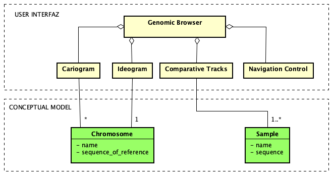

Navegador Genómico
Problema:
Contexto:
El usuario necesita navegar y explorar cantidades masivas de información del genoma.
Los usuarios necesitan enfocarse en una determinada región del genoma considerando la información contextual o anotada asociada a dicha región.
Fuerzas:
Solución:
Desplegar la densa información del genoma dentro de una sola página. La pagina debe incorporar mecanismos de navegación y exploración sincronizados con un sistema gráfico paralelo y alineado de secuencias genéticas que permita no solo almacenar la secuencia bajo estudio sino también anotaciones que provean información contextual asociada. La página Navegador genómico debe considerar:
Visualización.- La página debe mantener la relación contexto-detalle permitiendo al usuario enfocarse en detalles de la secuencia genética sin perder la visión general de la estructura del genoma. En este sentido, el patrón Cariograma puede ser utilizado para mantener la visualización del contexto (el conjunto de cromosomas de la especie bajo estudio) y el patrón Ideograma pueden ser utilizado para desplegar el detalle de un cromosoma específico. Los patrones Cariograma e Ideograma facilitan la orientación a lo largo de la secuencia genética.
Despliegue de secuencias.- Desplegar la secuencia genética bajo estudio de manera horizontal y permitir al usuario agregar paralelamente otras secuencias o anotaciones que brinden información contextual a la secuencia bajo estudio permitan su comparación. En este sentido, este patrón se apoya del sistema de pistas provisto por el patrón Pistas Comparativas permitiendo al usuario agregar varias pistas apiladas con información de anotaciones relevantes y asociadas a la secuencia bajo estudio. El sistema de pistas también facilitan la comparación entre diferentes secuencias alineadas.
Navegación y exploración.- Facilitar la navegación y exploración por el genoma incorporando controles de desplazamiento, alejamiento y acercamiento. En este sentido, el patrón Cariograma puede ser utilizado para facilitar la navegación por los cromosomas que componen el genoma y el patrón Ideograma junto con el patron Control Navegación pueden ser utilizados para facilitar el desplazamiento por la secuencia genómica y su visualización a diferentes escalas o niveles de detalle.
Estructura:

Patrones relacionados:
Ejemplos:
La figura 1 presenta el patrón Navegador Genético implementado por el UCSC Genome Browser que muestra la secuencia genética de la especie Humana (GRCh38). El browser está formado por el Ideograma, el sistema de pistas comparativas y el Control e navegación. Sin embargo, el cariograma no está implementado. Cada texto en la primera columna se corresponde con cada una de las secuencias que han sido agregadas para proveer contexto a la secuencia genética. Además, existen varias pistas con el genoma de otras especies como el ratón, perro, gallina, etc, que están alineadas con el genoma del humano con el fin de realizar comparaciones en el material genético.
Se puede encontrar Navegadores Genéticos y Visores genéticos implementados en plataforma web y escritorio.
Basados en web:
* puede ser embebido en una aplicación web existente.
Basados en escritorio: